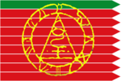
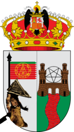
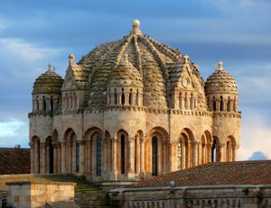
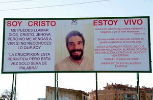

Zamora (España)
 De: La Frikipedia, la enciclopedia extremadamente seria.
De: La Frikipedia, la enciclopedia extremadamente seria.

|
Este artículo necesita ser ilustrado. Busca una afoto en nuestro depósito de imágenes o donde sea y ponla, pero que no sea pr0n, que se cabrea el señor del adSense y nos corta el grifo de los dólare. Y sin dólare no hay servidor...
|
| De la serie ciudades del mundo:
|
| Zamora Hill
|
| 
|

|
| (Bandera)
|
(Escudo de armas)
|
|
| Topónimo oficial
|
Zamora, "La Bien Cercada".
|
| País
|
España / León (para no herir las sensibilidades de las 4 personas que así lo creen).
|
| Código postal
|
49000 compartido con Villalasputas
|
| Superficie
|
Mucha
|
| Altitud
|
650 metros
|
| Distancia
|
A dos pasos
|
| Fundación
|
En los Tiempos de Fraga
|
| Población
|
Jubilados y facheros
|
| Gentilicio
|
Zamorenses y zamoranos nos la agarras con las dos manos.
|
| Alcalde
|
Una facha del pp llamada Valdeonis I
|
 Zimborriaco de la catedral
Zamora Facha, heroico bastión de la España Profunda situado al oeste de la Península Ibérica, al lado de la frontera con Portugal, que lucha abiertamente por su anexión al País Llionés.
Fue motivo de guerras entre España y Portugal durante milenios, no porque Zamora estuviera en sus dominios, sino que en dicha zona se había descubierto un virus zombi con el que se podía manipular a placer al mundo. Algunos la consideran la versión española de Texas Silent Hill, ya que apenas se ve un alma por la zona y hay más iglesias que hamburgueserías en ese pueblo. Otros tantos, opinan que dicha ciudad directamente no existe, siendo una leyenda urbana que de vez en cuando sale en las noticias por asuntos de alcance como "Miss Fea". No obstante, digan lo que digan existe, pese a que lo más avanzado que poseen son los cables de teléfono de cobre de aquellos años en los que Francisco Franco era corneta.
Cuenta con casi 170.000 habitantes posiblemente zombis nazis, el más joven de 80 años y boina negra con rabillo super-fashion, y una tasa de nacimientos que hace pensar que el sexo que se practica por esos lares convertiría, en comparación, a "El Vaticano" en la Mansión Playboy. Uno de sus mitos populares, es que la causa de su bajísima natalidad se debe a los experimentos realizados antaño para instalar en la zona una especie de Internet Inalambrico-Radioactivo que iba a 0,000000000000000001b/h, que duró lo que Chikilicuatre después de Eurovisión, y que fueron llevados a cabo por la USANavy o algo así, en "compló" con una cosa de por aquí llamada PREPAL. Un hecho que dejó a la mitad de la población estéril y a la otra mitad medio idiota, o sin el medio...
La increíble Historia de Zamora
Todo se remonta a cuando la Marleytuga creó a Dios. Dios, a su vez, creó al mundo (véase Badabín badabán). En él, por error, se creó al Fragasaurio, que fue enviado al otro extremo del Universo. Dios, en su inocencia, creyó haberse librado de él e intentó durante unos cuantos años arreglar el mundo. Pero el Fragasaurio sobrevivió, camino millones de kilómetros y bla bla bla.
Total, que hacia el nosecuantos antes de Vin Diesel (A.V.D) este ser volvió a nuestro planeta y jodió todo lo que estaba a su paso, como por ejemplo esta localidad, a la que pisoteó después de descubrir que para ir de marcha por aquí, había que vestirse de negro, llevar una cruz a la espalda y salir a las 5 de la mañana acompañando a unos pasos de madera muy extraños. Tal grave fue dicha ofensa, que enfureció a Dios y a Diox, que lo denunciaron. El caso llegó a los tribunales, pero al final fue archivado porque los políticos locales estaban más interesados en saber quién iba a acompañar al Cristo de las Injurias en su siguiente procesión. Desde entonces, ‘’’Zamora’’’ es un Truño, o eso se dice.
Por esas fechas, una afluencia de ancianos de la tercera edad que marchaban armados a la conquista de Duero lleno de jabón (producido por las lavanderías gitanas a orillas del río). Esos "jovenzuelos" comenzaron a procrear entre sí... (Espera ¿sexo en Zamora? Nah, en todo caso se la empezaron a cascar y el esperma hizo de las suyas). Pero lo más sorprendente es que los niños salían del útero de sus madres... con canas. Esos infantes centenarios empezaron a construir catedrales, edificios y casas que quedarían deshabitadas para luego ser derribadas por Almanzor. En otras palabras, muchas cosas sólo para que los biejos (si Biejos, Bi=dos, Ejos=viejuno, Bi-Ejos Dos veces viejunos) estuvieran entretenidos mirando obras que nunca terminaban.
Desde ese momento la localidad fue creciendo y llenándose... de más viejos (la ciudad... y el camposanto) y la única población joven y de izquierdas es la que viene de fuera (Por "fuera" entiéndase de Sudamérica, porque de España pues casi que no). También hay zamoranos por el mundo. Los masculinos son identificables por sus frases como "Me Chisko" y por ser todos del Real Mandril. Los femeninos (con los) se caracterizan por su baja estatura, cabello negro, cara de mala hostia o empanamiento y una manía persecutoria por creer que quieres sexo con "ello"s cuando lo único que pasa es que han entrado en tu campo de visión mientras comprabas el pan en el supermercado.
Lo más sorprendente de la historia de Zamora, es que aunque el rio este lleno de excrementos de todas partes de España, la gente sigue paseando, aspirando los olores, viendo flotar los patos muertos, haciendo botellón e incluso follándose a la parienta en la orilla.
Población
- Anciana: Representa el 90 % de la población zamorana. Existe una gran concentración de población anciana en la Residencia "Los Tres Árboles" y en cualquier "sitio pa` sentarse honde de la sombra" (comúnmente llamados bancos). Zamora, en la época en la que el PSOE estaba en el ayuntamiento, recibió el título "Reserva natural de la tercera edad". Muchos de estos pobres ancianos no pudieron disfrutar del título ya que les dio un ataque al corazón y fueron trasladados al hospital "Virgen de la Concha" donde fallecieron en el acto a causa del servicio de éste.
- No anciana: Representa el 10% de la población (Va proporcional a la popularidad de Zapatero en España). Existe una gran concentración de población no anciana en "La zona asco" (véase más abajo). Se reparte entre la Universidad Laboral (antes CEI), Corazón de María, Claudio Moyano, Milagrosa, Amor de Dios, María de Molina, La Vaguada, Maestro Haedo, Río Duero, y ASPROSUB (Ordenados por índice de popularidad). En Zamora, suele soplar el viento del este, por lo que no te será difícil distinguir un adolescente zamorano, ya la gran mayoría lleva el peinado "bieberiano" aunque un 100% de ellos deteste al que lo promueve.
Acontecimientos más importantes
- 11 de Junio. Fiesta de Puchero. Se prepara una gran pucherada en la Plaza Mayor con alubias, morro, oreja, pata, tocino y chorizo de primera. Luego de 2º callos con patatas, de 3º brochetas de tocino al pimentón caducado, y de postre flan de tocino con virutas de coscaron. ¡Qué gran evento! ¿Eh?
- 5 de mayo de 2007 D.C.N. vienen los Harlem Globetrotters a Zamora.
- Año 20 D.C.N. Zamora sale nombrada en un anuncio... (Somos tan importantes que "El Sur" de Víctor Erice transcurría en Zamora y no mencionaban su nombre ni una sola vez en toda la película)
- Nuestra amadísima patrona por excelencia, Doña Urraca se suicida (o eso dijeron sus abogados) en el 47 A.C.N. (Nosotros somos como los de Bilbao, nacemos y morimos donde se nos sale de la punta de la p$%&/, pero siempre en Zamora).(Les recordamos, por cierto, que estas fechas tienen un margen de error de unos 2000 años humanos y por lo tanto son extremadamente precisas...).
- En el 2006 la Europeade recala una segunda vez en Zamora. En ella se vivieron momentos de auténtica catarsis entre los que destacan los protagonizados por los tíos disfrazados de cacatúa con cencerros atados a la cintura, procedentes de Europa del Este. La gentes de la ciudad nunca volvieron a ser lo que fueron. Ver vídeo
- Un indígena de los tiempos del Hombre de Cro-Magnon escucha un palabro llamado "PePé" y le empieza a hablar de él a todo el mundo. Desde entonces la ciudad ha estado en manos de ese "concepto".
- Uno de los miembros de "ese concepto", y que fue alcalde de la ciudad, un tal Martín-Antolín, se cabrea con su formación y monta un chocho que te cagas desde la Diputación Provincial. El asunto salta a los medios nacionales y durante unos meses el país cree que Zamora es la Sicilia española. Todos los días sale un político a dar una rueda de prensa con la canción "Voy a decir todo lo que sé" y algunos salen incluso en la portada de "El País". Total, que el caso se archiva y el tío se pasa al CDS. ¿Qué pasó? Pues...
- En 1999 unos gitanos con cabra acamparón debajo de mi casa y montaron la mafia que de vez en cuando va a aterrorizar a los estudiantes del Amor de Dios con su mítico "Hey payo dame un euro pa ir a Salamanca". En Diez años siguen sin haber reunido los 4 euros...
 Señor con tiempo libre de Villalonso
- Verano de 2010: La Real Family, se da a conocer via youtube.[1] Temblad, zamoranos. Temblad.
- Agosto 2011: El Tirador de la Marina. Un chico se lia a perdigonazos con la peña y casi le dan a un pájaro de rebote. Los viejos tenían miedo, tu podías ser el siguiente decían. Ahora en Zamora ya podemos decir: "Yo sobreviví al tirador de la marina".
- Agosto 2012: Para no perder la costumbre de años anteriores, este año en vez de pegar tiros, un pirómano se lia a quemar coches y garajes, por el tema de que hace poco calor en agosto...
- Mayo 2013: El mono de la Aldhuela hace su aparición.
- Octubre 2014: Por fin se confirma, Zamora esta a la cabeza de la UE por mayor volumen de población envejecida, mayor placas solares por metro cuadrado. [[2]]
- Abril 2015: Una oveja se pasea por San José Obrero y se da una vuelta hasta la Ronda la Feria.
- Junio 2015: Drichen la vuelve a liar y saca un tema nuevo #muñekitacrazy. Al final se juntara con los Real Family para hacerle un cover a Bisbal.
Enemigos naturales
Ya sea por clima o alimentación, los zamoranos tienen una ciudad rival, un nemesis al que enfrentar, la ciudad de Valladolid y a todos sus habitantes (lo cual es extraño, ya que ambos comparten ideologías similaree, sin embargo la religión les difiere mucho). Cabe destacar que el zamorrano medio, tiene fuerte obsesión con el vino blanco mientras que el valladoliero es propenso a darle al vino negro ¿racistas?.
Lugares de interés
- Calle de Los Herreros. Es el sinónimo de "marcha" en Zamora. Dicho concepto consiste por ésta zona en subir y bajar la cuesta una y otra vez en un espacio de tres metros de ancho y ocupado por unas 2000
personas canis por metro cuadrado. Cuando llegan las 02:30 horas cierra, y puedes entrar y salir de los bares de la Plaza Mayor si tienes ganas de más. Divertido ¿eh?
- Parque de San Martín. Hasta 2007 era el lugar de la ciudad por excelencia para hacer botellón. Pero los vecinos del casco antiguo se quejaron de que los jóvenes borrachos no les dejaban dormir y se orinaban en sus puertas y la Policía tomó cartas en el asunto (aunque les costó). En la actualidad es un parque más de la ciudad... con farolas y todo. Son ahora los habitantes de la zona del río los que sufren las consecuencias.
- La Marina. Un parque en el que pasar la tarde mirando al Sol (e incluso "Cara al Sol" ahora que han instalado una discretísima bandera al lado de la fuente) y dándote el lote con la novia o con el/la amig@ de tu novi@, aunque es de auténticos Kamikazes salvo los que optan por meterse en la fuente a hacer sus cosas. Es también conocida por ser la zona de reunión donde se recargan las placas solares de la ciudad: uséase los abueletes.
- León Felipe. Lo mismo que la Marina pero para FOLLAR. Está lleno de canis drogadictos que meten miedo a los niños que quieren jugar (o al menos a los que no quieren jugar al teto con ellos).
- Kiosco Felipe. Hace el agosto cada Semana Santa vendiendo pipas. Es un buenazo y uno de los mejores tíos de Zamora. Además de leal seguidor del equipo de fútbol de la ciudad es su socio número 1, aunque no es difícil porque debe haber 3 como mucho. Su hermana trabaja con él, y nunca pone pegas para lucir en su escaparate todo tipo de cartelería.
- Pub Aguilas. antiguo pub al lado del epoca en el cual podias colocarte en dos segundos simplemente con respirar.
- LPP . (Los putos pisos, también conocidos como "Los del matadero").
- Cine Barrueco. De los tres cines que teníamos en Zamora este era el más viejo, y el primero que ha cerrado, ahora lo han tirado por dentro y han dejado la fachada. Olía a humedad y las palomitas estaban rancias. Como anécdota, pusieron la entrada a 5,01 y si no tenías el céntimo no te dejaba pasar la señora barrueca/taquillera, sobre la cual circula una leyenda urbana sobre su relación sentimental y muy accidentada con una botella de agua mineral de dos litros.
- Museo de Semana Santa. se trata de pasear entre los estrechos huecos que dejan los pasos procesionales. Están todos pegados y es ejemplo de cómo no almacenar obras de arte. Dicen los expertos que lo de Museo le viene grande, y desde aquí, decimos que enorme. Lo mejor del mismo es Trini, la taquillera.
- Olimpiada. Cerrada en 2011, fue la responsable de los problemas de ludopatía de los estudiantes zamoranos. Las diferentes ruinas económicas de las salas de máquinas de la ciudad, dejaron a "Oli" como el único reducto para los incondicionales del 'King of Fighters' que se tiran las horas muertas "echando piques" e insultándose entre ellos con frases como "Eres un puto perro de mierda" o "Yo juego desde los tiempos de Neón". Algunos están casados y con hijos mayores que el resto de asistentes al lugar. Con su cierre ya solo queda Coliseum como sala de máquinas.
- Coliseum. Igual que Olimpiada, último reducto de ludopatía estudiantil en Zamora, que encima lo tiene el que alquilaba la parte de abajo de Olimpiada.
- Amor de Madre. Conocido local en el que tatuarse en la espalda "Soy un dios del sexo" en chino, cuando lo que en realidad te han puesto es "Tengo el culo gordo"...
- Tres sesenta. Tienda de ropa cerrada por sus ventas. Es lo que tiene el poner un negocio en el que lo más barato son 400€.
- RESET. Un club de videojuegos inaugurado en el 98 en un "callejón-tunel" al lado de un bar del que salía mucho humo y todo el mundo estaba siempre riéndose y de un salón recreativo llamado Zeus, cerrado ahora es un burguer, al que iba toda la gitanada de la ciudad... Al principio era el local del AyP (Alquila y piratea), ya que los alquileres estaban tirados de precio y "tokiski" iba allí a alimentar "su tostadora" con todos los juegos de Play y de PC. Cuando las cosas les fueron mejor, se fueron a La Marina y empezaron a cobrar hasta por respirar. Más tarde, cuando salió la PS2, con eso de que usaba DVD les dio por meter películas... y sobrevivían como videoclub. Sus dueños, César y José, (especialmente el primero) forman ya parte de toda buena conversación que se precie cuando no se sabe qué decir. "Oye y si vamos y les pedimos una bolsa...", Cerró en 2009, ya que desde que existía megaupload nadie iba por allí. Ahora al lado del local hay una tienda de Adolfo Domínguez. Actualmente es una tienda de
deportes pijos pádel.
- Molly Mallone's. (Tirame de los cojones). O como te la clavan sin bajarse los pantalones. Su dueño es un cacho pan, ejem ejem...
- El Café de las Artes. La gente entra y tiene un +100 en molonidad, es mejor que entrar en una Apple Store. También te la clavan sin bajarte los pantalones, total, te cobran por sentarte sin tomar nada.
- El Numancia. Es una macrosala de conciertos aunque no lo parezca. En ella se realizan las olimpiadas de beber cervezas todos los años, aunque siempre las gana el Chimera.
- El Trabanca. Lleva casi 40 tacos abierto.
- Illusion. (Antes Pagos al contado o PAGOS en Herreros). O cómo romperse la cabeza sin caerte por las escaleras. Más de uno las a bajado de culo, aunque es un sitio tranquilo, libre de chonis y cannis y de los del templete, aunque proliferan los pijos.
- Coyote Rojo. (Antes Zapping), en la plaza mayor. Sitio donde trabajaba Jali (el portero) y que es muy conocido porque antes trabajaba en lo que era la discoteca "La Misón", muy majete y a todos saluda. También donde se congrega el mayor número tías buenas por metro cuadrado los fines de semana, junto a Ilusión, y Versus.
- Versus Night Club. Situado en la plaza La Leña. Donde los pijos beben hasta caerse al suelo. Buen sitio para ligar, y donde tambien se concentra un buen numero de tios/as buenas junto al Coyote Rojo.
- Semura. Al lado del Versus. Sitio donde te crees mayor solo por entrar y porque "voy a la universidad de Salamanca". Todavia te siguen poniendo tengo un tractor amarillo.
- El Bayadoliz. BIBA LA HESO. Y BIBA SUS MONTADOS DE LOMO
- El Barrio de las Putas o "La Muralla". Sus vecinos están hasta los cojones de encontrarse por ahí a altas horas de la mañana a la crème de la crème zamorana a la que ya aguantan durante el día en los puestos de mando.
- María de Molina. El de al lado del Claudio, instituto que parece un mojón y en el que se congregan una gran selección de las mejores razas. Mas famoso por su olor a porro en la entrada que por sus resultados académicos.
- El Maestro Haedo. es un
luminoso instituto cuchitril (O fumadero de porros en otros tiempos).
- La Horta. Barrio lleno de gitanos que tiene una
mierda de pistas deportivas inaccesibles y llenas de ratas.
- El Amor de Dios. Una serie de tres colegios que pertenecen a la misma congregación, son colegios concertados, es decir, de iniciativa privada pero subvencionados con fondos públicos, no son tontos ni nada... Al igual que el Colegio Medalla Milagrosa, Las siervas de San José o el Corazón de María, las religiosas que lo regentan son especialistas en inculcar a los niños un plus pijismo a sus alumnos, utilizan instrumentos de control mental, como animadas canciones sobre la niña María (de Ricky Martin) y su fundador: el Padre Usera.
- El cimborrio de la Catedral. (Sí, sí, existe).
- Colegio Medalla Milagrosa. Creado en el año 666 A.C.N, es un centro donde se agolpa el 50% de la juventud no cani de la ciudad (el otro 50% está fumando o trabajando de barrendero mientras fuma). También habitan en él monjas que absorben las ganas de vivir de los "estudiantes". Un hecho que tal vez explique que todos salgan con tendencias suicidas y pie y medio en el INEM.
- El Bosque de Valorio. O el timo de los fondos europeos donde vive David el gnomo.
- El templete. La zona de las mil y una razas (en la zona del parque de la Marina). Allí se encuentra la diversidad étnica de Zamora, formada por ejemplo por los negros que se han ido agrupando poquito a poco hasta adueñarse de una parte de la Marina, y que antes del 2006 o así no estaban. NOTA: no son peligros, sólo te la meten hasta Albacete si se te ocurre no obedecerles cuando te dicen que te largues. Hacen su vida vestidos de people rapera y cuando pasa una tía le gritan: ¡Mamasita ven y me comes el salsisón! También están las chonis en la parte sur.
- ADV. (Antes Arena) (Ahora Cerrado). También en herreros. Local donde si querias suicidarte, no hay mejor manera que entrar y te peguen un navajazo por alguno de estos de la zona de las mil y una razas. (También sitio de chonis y canis).
- Ulalah Pub. Antiguo Dimensión, luego Ginger, ahora ya no se sabe ni que nombre tiene, igual que el ADV pero el navajazo te lo daba alguno de las llamas. Actualmente reformado por Angelín, actual dueño, que se ha llevado a todos pa ahí después de dejar como camarero el Amordiskos, y dejarlo desierto. Mejoró la situación en cuanto a gente se refiere.
- Bora Bora. Ha tenido tantos nombres, desde la mision, space, 7pk2, la nube.... que ya solo los chonis y canis van allí. Solo tuvo exito cuando fue la mision y Space. Situado al igual que el BB+ detrás del centro comercial LIDL.
- BB+. De los últimos reductos para salir de fiesta en Zamora después de estar en Hereros y la Plaza. La gente va a este lugar porque no queda otro sitio peor en toda Zamora para seguir bebiendo garrafón, o irte de putas. Desierto gracias al byAlice que se ha comido y llevado a toda la zona. (Las putés han disminuido). Después de aquí ya solo te queda la Divina Comedia.
- La Divina Comedia. Lugar conocido por abrir a las 5 la mañana y cerrar a las 5 de la tarde del dia siguiente, pasando antes por el byAlice.
- byAlice. Menos el conejo de Alicia puedes encontrar de todo. Uno de los últimos Pub/Discoteca para salir en Zamora. Al menos hay mas variedad de gente, y ha dejado solo con putés al BB+. Buena música. Cierra puntualmente a las 6:30 de la mañana para que todos vayamos a la Divina, ya que es del mismo dueño. Conocido por ser el más grande de todos, y por haber sido donde guardaban los autobuses en llamas cuando se prendió/prendieron fuego.
- Turmapark. (Antiguo Ludopark, antiguo Chicolandia). Sitio donde cuando eras enano te lo pasabas teta celebrando allí tus cumpleaños, pero que cuando creces te das cuenta de que es un sitio que huele a pies, donde unas "payasas" te pintan chorradas en la cara. Un lugar lleno de bolas sudadas, descoloridas y hay algunas rotas (llevan allí años) y si buscas entre ellas puedes sacar mierda. Es un lugar donde al tirarte por el tobogán te quemas de arriba a abajo y donde te dan pizza de la marca Eroski, pero que por lo demás está genial ¿eh?
- La cometa. antigua guardería situada junto al colegio Corazón de María. Es uno de los sitios preferidos por los vagabundos para dormir, drogarse y demás actividades. También es el lugar de reunión de la sanguinaria banda DHDM (que no conoce ni Dios...). Aparte de reunirse en ella, la utilizan para desahogar sus hormonas con los cristales de las ventanas.
- El Blumen. Bar cojonudo en la autovía (sí, sí, ese que tiene un expendedor de condones y tangas). Ideal para cenar por 2 euritos, misteriosamente cierra los sábados por la noche por lo cual ya te toca buscar sitios por los demás burguers de la ciudad: Kalua, Eurogrill, Country burger...
- El Claudio Moyano. Es un instituto lleno de pijos, que más que un instituto parece un museo o algo así, tiene mucha fama en toda la ciudad, pero en el fondo es igual que los demás, sólo que con sobrexceso de pijos y otras subespecies como algún heavy y una gran manada de frikis.
- Las Llamas. Pa comprar drodga pal colacao y caballo.
- La vía del tren. pa' pincharse el caballo de las llamas y/o sucidarse en la via.
- La máquina de leche del Eroski. Leche Gaza, leche, leche.
- La casa de la gitana de La Alberca. Vende petas.
- El Trébol. El bar de los moros, que venden petas a saco, vas te pides una birra y les dices que te hagan 10 euros que eres amigo del Was.
- La zona asco. Es el principal lugar de reunión de todo adolescente pijo y popular que se precie. A ser preferible, de la "Milagrosa”,"Claudio Moyano", "Amor de Dios" o "Corazón de María". Se encuentra situada desde la entrada al aparcamiento subterráneo de la Marina (el de la parte del Bershka), hasta la pared del circulo gigante (ya alicatado). La reconocerás por el olor a laca las miradas de superioridad y los reflejos de "Munich". Los días de lluvia, estos
despojos humanos jóvenes se dirigen al "Café de las artes".
- Universidad Laboral. Instituto centro de formación de gitanos, canis y demás gilipollas cuyo objetivo en la vida es esperar a que sea de noche y meterse de todo (pero de todo) y meterse con los frikis durante el día. Es conocido porque su profesorado es el más viejo de todos los institutos creados desde el badabin badaban, y el bajísimo índice de masa cerebral de sus alumnos.
Frases y Palabras tipicas
- Tener unos huevos como el caballo de longinos: Dicese como que tiene unos huevos grandes refiriendose al paso de semana santa con el caballo de longinos.
- Nuca: Los que todos conocemos cuando te dan una colleja.
- Mamola: Lo que esta debajo de la perilla.
- Cuzo: Cotilla, meticón. "No seas cotilla".
- Cuitao: Pobrecico, pobrecillo.
- Mancarse: Hacerse daño, ¿Te hiciste daño?, ¿Te mancaste?.
Sabias que el Zamorano
- El zamorano no te llama por teléfono; te pega un telefonazo
- El zamorano no cotillea; "cucea"
- El zamorano no dice Hola, te dice: ¡¡¡qué pasa majo!!! O qué pahamaho!!!
- El zamorano no dice claro que sí, es verdad, te dice: ¡¡¡anda majo!!!O ¡¡¡anda maho!!!
- El zamorano no se cae; se mete un hostión
- El zamorano no se lanza; se embala
- El zamorano no bebe mucho; se pone ciego
- El zamorano no es que no lo entienda, es que no lo coge
- El zamorano no te da la espalda; te manda a tomar por culo
- El zamorano no te llama la atención; te dice ¡¡¡¡¡Andevás!!!!! o ¡¡¡¡Veenga!!!!
- El zamorano no molesta; da por culo
- El zamorano no habla con los amigos; se echa un parlao
- El zamorano no golpea: te da de hostias o te parte la cara
- El zamorano no trabaja a tiempo parcial; echa una mañana o una tarde
- El zamorano no se impresiona; dice: ¡¡LA VIRGEN!! ¡¡AY VA LA VIRGEN!!
- El zamorano no sufre de diarrea; se caga por la pata abajo
- El zamorano no va rápido; va a carajo sacao
- El zamorano no se va; sale arreando
- El zamorano no duerme; se queda sobao
- El zamorano no se ríe a carcajadas; se d'escojona
- El zamorano no pide que lo lleven; pide que lo acerquen
- El zamorano no es un presumido; va hecho un pincel
- El zamorano no es un insensato; es un soplapollas
- El zamorano no es buena persona; es buena gente
- El zamorano no es despistado; está perdío
- El zamorano no es un gandul; es ¡muu peeeerro!
- El zamorano no pierde el tiempo; está perreando
- El zamorano no dice tardaré en bajar; dice: ahora bajo si eso
- El zamorano no está cansado: está reventao
- El zamorano no ve a una chica fea: ve un cardo borriquero o una casi guapa
- El zamorano no te dice que estás equivocado; te dice: ¿¡dequévastontolapolla!?'
- El zamorano para decir que sí no niega dos veces; niega tres:"¡noniná!" y a veces cuatro: "¡noniná!, ¿no?"
- El zamorano no se enfada; se rebota
- Al zamorano no le sale algo mal; se le va todo a tomar por culo
- El zamorano no es sencillamente genial; el zamorano es la polla
- El zamorano no se saca un moco; se los come
- El zamorano vive en zamora
Enlaces externos
Autor(es):
- Krusher
- Nexo
- Fordus
- Frikiman
- Aque
- Alex2610
- Jayjayjay 92
- Krash
- Azulejos
- Estebita2006
Frikipedia 2005-2016, Licencia
GFDL 1.2 - Extraído por FrikiLeaks